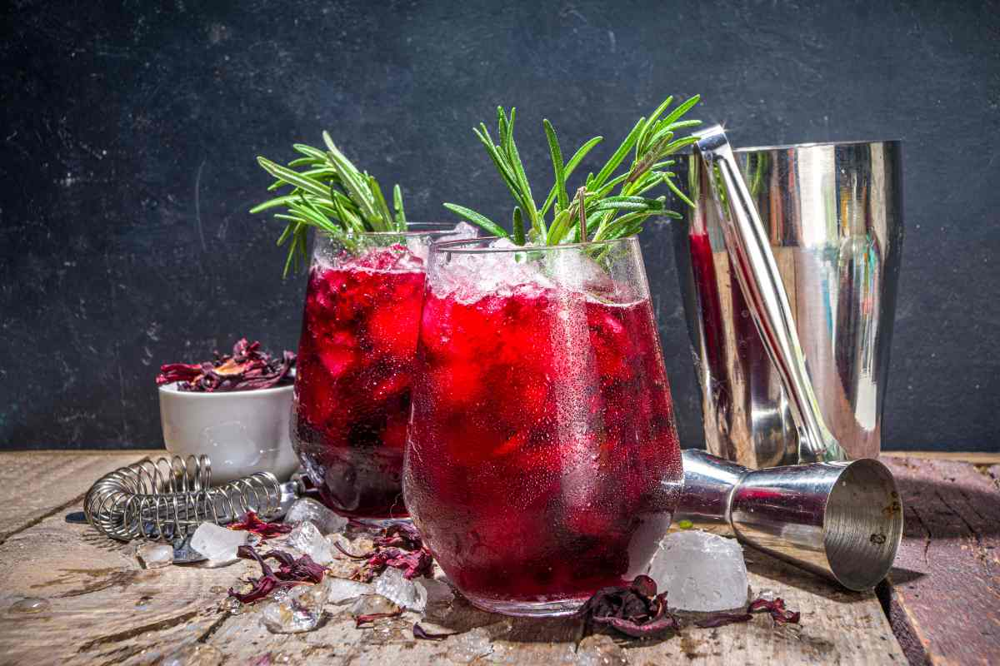

Coktail "Army 1800"
Recientemente de ha adoptado una forma de preparar bebidas de bar con ingredientes naturales más allá del licor, el jugo o el refresco y hielos. A este tipo de recetas se les llama "Mixologia" y en este espacio se aprendera a realizar un cocktail llamado "Army 1800"
Ingredientes
- Tequila 1800 cristalino (frio): 45 ml
- Extracto de Jamaica concentrado con romero: 250 ml
- Jarabe natural: 15 ml
- 1 rama de romero fresco
- 1 hoja de lavanda desinfectada
- 8 semillas de cardamomo
- 1 Vaso old fashion
- Hielos
- Flores comestibles (3)
Preparacion
- En un shaker agregamos las semillas de cardamomo y las hojas de lavanda para machacar con un mortero.
- Una vez machacados se agrega hielo, el tequila, el jarabe y el concentrado de jamaica.
- Se "shaekea" por 3 minutos emulcionando los sabores e ingredientes con el hielo.
- Se coloca el vaso old fashion con hielos y se remueven un poco para enfriar el vaso, despues con un colador sacar el agua generada por los hielos para enseguida vaciar el contenido del shaker con el colador con el fin de que no se vayan residuos de las semillas y la lavanda.
- Una vez servido se pasa tenuemente la rama de romero por la parte superior del vaso para aromatizarlo sin dejarle un sabor amargo.
- Por ultimo se le colocan unas cuantas flores comestibles sobre los hielos y se puede agregar una pajilla si así lo requieren.

¡Esperamos la disfrutes y salud!